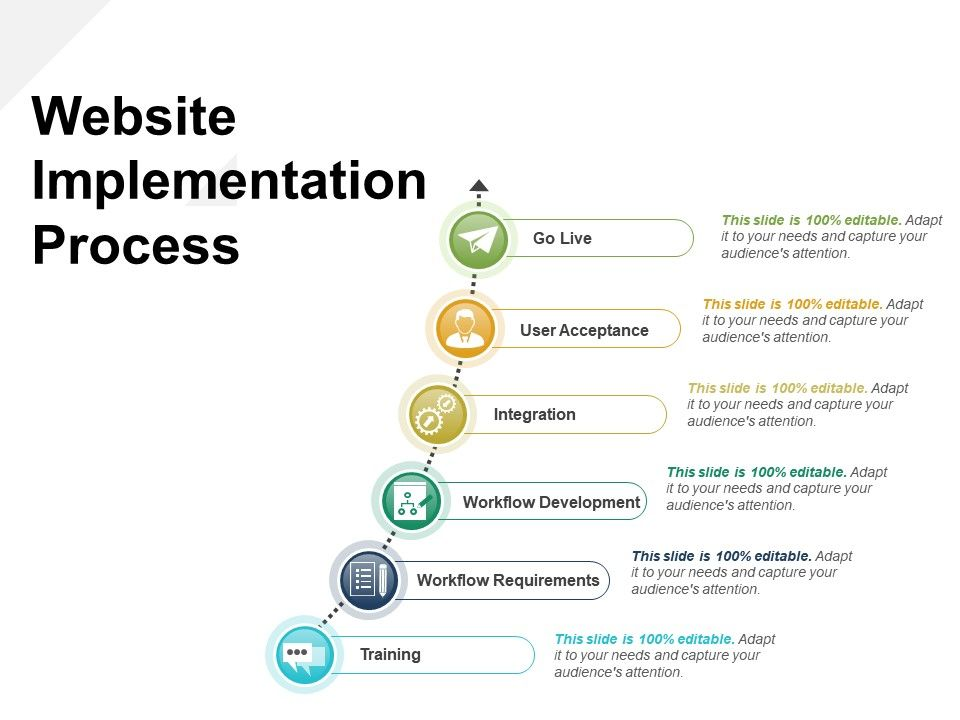

Implementation Terms:
1. HTML (Hypertext Markup Language): The foundational language used to structure content on the web, creating the basic layout and
elements of a webpage.
2. CSS (Cascading Style Sheets): A stylesheet language used to describe the presentation of HTML elements, including layout, colors,
fonts, and responsiveness.
3. JavaScript: A programming language that adds interactivity, dynamic content, and complex functionality to web pages.
4. Frameworks and Libraries:
- React: A JavaScript library for building user interfaces, particularly for single-page applications.
- Angular: A framework for building dynamic web applications, providing two-way data binding and powerful templating.
- Vue.js: A progressive framework used for building UIs, known for its simplicity and flexibility.
- Bootstrap: A popular CSS framework for developing responsive, mobile-first websites quickly with pre-styled components.
5. Responsive Web Design (RWD): Techniques like media queries, flexible grids, and fluid images to ensure websites work well across
different devices.
6. DOM (Document Object Model): A programming interface for web documents that represents the structure of a page, allowing scripts
to update content, style, and structure dynamically.
7. API (Application Programming Interface): A set of rules that allow different software entities to communicate, often used to fetch
or send data between a web page and a server.
8. Version Control (e.g., Git/GitHub): Tools and platforms that help track changes in code, collaborate on projects, and manage
versions of the application.
9. Web Hosting: The service that makes websites accessible on the internet by storing files on a server (e.g., Bluehost, AWS, Netlify).
10. Deployment: The process of making a web application available to users, typically involving transferring code to a server and
setting up domains.
11. SEO (Search Engine Optimization): Practices implemented in the code to improve a website’s visibility in search engine results,
including meta tags, alt text, and semantic HTML.
12. Accessibility (A11Y): Implementing features like ARIA (Accessible Rich Internet Applications) roles and keyboard navigation to make
web pages usable for people with disabilities.
13. Performance Optimization:
- Minification: Reducing file sizes of HTML, CSS, and JavaScript to improve load times.
- Lazy Loading: Deferring the loading of images or scripts until they’re needed to speed up the initial page load.
- Caching: Storing copies of files to speed up repeated access to resources.
14. Cross-Browser Compatibility: Ensuring the website functions correctly across different browsers (e.g., Chrome, Firefox, Safari) by
handling inconsistencies in CSS and JavaScript.
15. Debugging Tools: Tools like Chrome DevTools or Firebug that help identify and fix errors in code, optimize performance, and test
responsiveness.